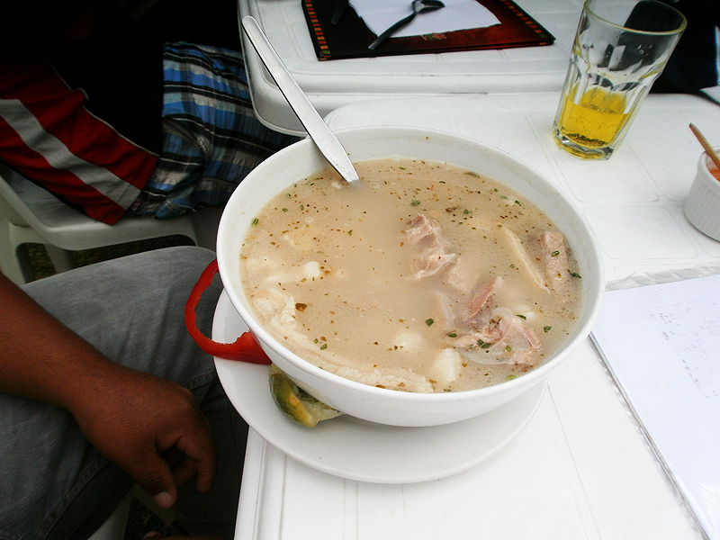
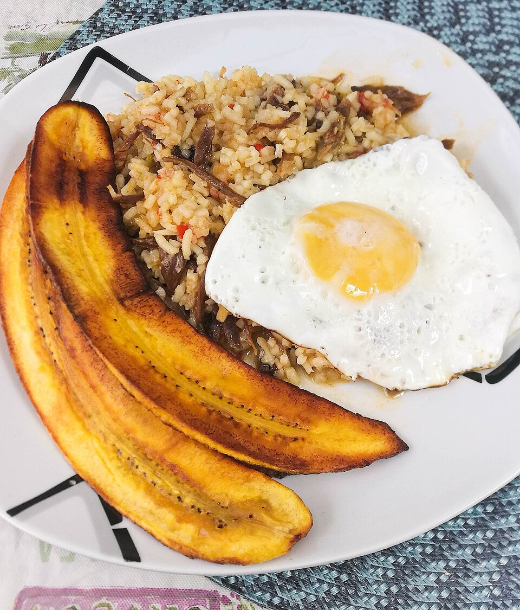
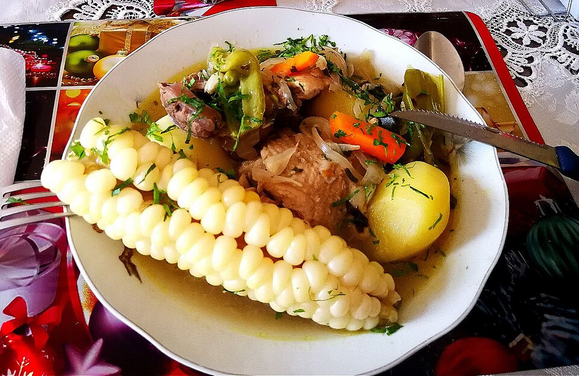
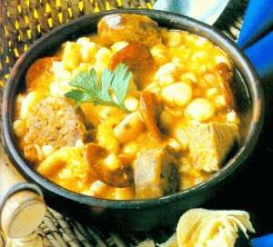
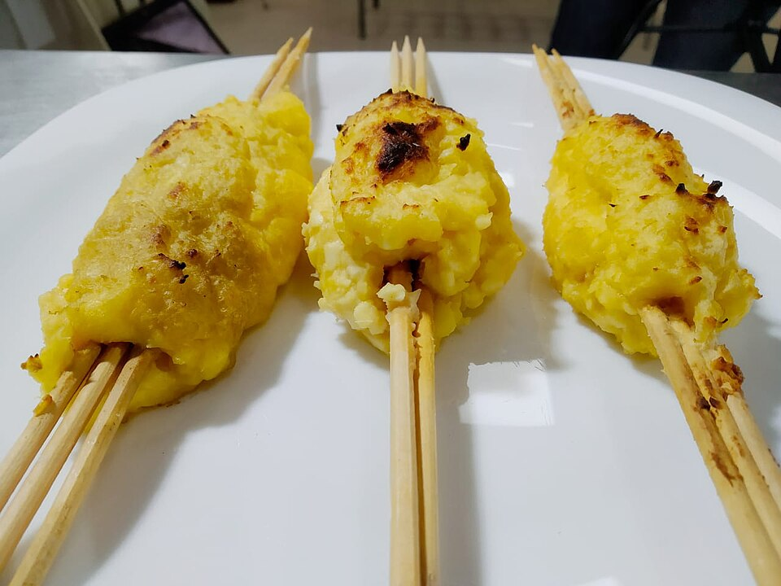

Patasca
Comida tradicional muy conocida en diferentes regiones de Bolivia.
Su historia: plato de celebración preparado lentamente para reunir a la familia.
Ingredientes
- Maíz
- Carne
- Cebolla
- Ajo
COCINA DE TIERRA CALIENTE
Recetas que cuentan la historia de Santa Cruz y Camiri.
Explorar recetas ↓MESA ABIERTA
Conoce los platos que pasan de generación en generación: ingredientes sencillos, fuego lento y ese toque de casa que no se puede copiar.
ELIGE TU PRÓXIMO ANTOJO

Comida tradicional muy conocida en diferentes regiones de Bolivia.
Su historia: plato de celebración preparado lentamente para reunir a la familia.

Uno de los platos tradicionales más representativos de Santa Cruz.
Su historia: receta cruceña de aprovechamiento hecha con arroz y carne.

Plato tradicional que suele prepararse especialmente en fechas importantes.
Su historia: caldo festivo boliviano para compartir en Navidad y reuniones familiares.

Preparación tradicional que forma parte de la gastronomía boliviana.
Su historia: receta de raíces indígenas hecha con maíz, zapallo y papa.

Comida tradicional de Santa Cruz preparada principalmente con yuca.
Su historia: clásico del oriente boliviano, nacido de la combinación de yuca y queso.
DETRÁS DEL PLATO
La gastronomía de Santa Cruz y Camiri forma parte de la identidad cultural de nuestra región y de sus celebraciones familiares.
Muchos platos utilizan productos propios como la yuca, el maíz, el arroz, el plátano y diferentes tipos de carne.
Conservar estas recetas permite que las nuevas generaciones conozcan y valoren nuestra cultura.
A PRIMERA VISTA
Patasca
Majadito
Picana
Locro
Sonso de Yuca
TU RECETARIO PERSONAL
Aún no tienes platos favoritos.